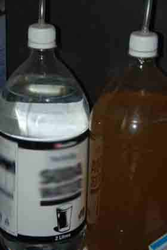

Carbon Dioxide CO2
HOW DO I USE CO2 IN MY AQUARIUM?
Carbon dioxide is essential to plant growth. Carbon dioxide in its purest form is a gas, but like oxygen it can be readily disolved in water. Aquatic plants utilize this disolved carbon dioxide to photosynthesize in a similar way that grass or a tree in a garden would do. Diffusers use membranes or reactors to dissolve drops of gaseous CO2 directly into the aquarium water, artificially creating the perfect environment for aquascaping.
In the same way as garden plants, aquatic plants need lighting, fertilizers and CO2. These are essential factors governing the speed of growth and health. With the addition of modern T5 or LED lighting systems and liquid/substrate fertilizers aquariums can become unbalanced. CO2 is required by these plants to balance the aquarium otherwise algae can quickly take over the tank.
It is important to remember CO2 can cause PH swings in the aquarium as carbon dioxide when disolved in water is acidic. Problems often arise at night when the plants do not photosynthesize. The build up of CO2 being added to the aquarium causes the pH to drop rapidly and can be detrimental to aquatic life. Adding carbon dioxide to the planted aquarium needs to be closely monitored.
There are many different ways to deliver carbon dioxide in the planted aquarium. These avenues differ in price, difficulty, success and maitenance. Below is a list of commercially available routes and a brief overview of each.

Pressurized CO2
- Pressurised bottles of CO2 generally vary from 1L to 5L and are suitable for a wide size range of aquariums. A pressurised bottle with an electronic solenoid valve is the easiest and most reliable option. A solenoid valve will allow the CO2 to only enter the aquarium during the day to prevent pH swings at night that can be detrimental to your fish.
- Most regulators will allow you to tune an exact CO2 bubble output to give you the best and most accurate results. Unlike DIY it will not leave a residue on your diffuser or require any maitenance when set up correctly. This setup will also need to be combined with a bubble counter, diffuser and needle valve.
- Advantages- Easy to setup and measure, very reliable and has the option of stopping overnight to combat pH swings if combined with a solenoid valve.
- Disadvantages- The most expensive method initially. It can be hard to source refills for bottles and may take time to perfect a successful CO2 regime.

DIY CO2
- DIY CO2 can be implemented in a number of ways. Fortunately carbon dioxide whether from a bottle or homemade mixture is still carbon dioxide. DIY CO2 is the most cost effective method using very cheap ingredients and every day hardware. It can also be very effective when properly executed.
- Usually DIY CO2 will cause a layer of slime to form on a standard diffuser but injecting it straight into the filter or into an up turned cup are popular methods used with much success. Click on the title for an in depth how-to guide on a very successful and cost effective CO2 dosing technique.
- Advantages- Extremely cost effective needing only sugar, yeast and plastic bottles. Cheap to refill and moderately easy to setup.
- Disadvantages- Needs to be refilled every few weeks. Harder to monitor and will continue to run at night. Needs a good recipe and patience.

CO2 Liquids
- These can be defined as Seachem excel and other forms of carbon in a liquid forms. They do not deliver carbon dioxide to the plant but rather a liquid formulation of carbon. They are not a perfect substitution of carbon dioxide dosing and become very cost innefective in comparison over time. They are useful in very small tanks which CO2 is not a viable solution and lower light tanks with lower CO2 consumption requirements. Unless a dosing unit is purchaes it can become expensive and painful to continue using these products every few days.
- Advantages- Easy to use and excellent for small aquariums. Can help combat algae in lower light aquariums in which CO2 is not viable.
- Disadvantages- Cost innefective and delivers carbon based solution to the plant instead of CO2. Needs constant adjustment and addition to the aquarium.

CO2 tabs
- CO2 tabs are ineffective and inefficient for all but the smallest of tanks. They are unpopular and produced in lower demand often leading to inferior low quality products. For very small tanks they are a suitable source of carbon but they will become an expensive choice over time. They are easy to use and convenient dosage sizes but have limited application.
- Advantages- Easy to use with visual dosage size. They are convenient for nano style tanks where other options are not viable.
- Disadvantages- Not suitable for long term use or large aquascapes. Cost innefective and higher probability of lower quality product.

Electronic CO2
- Electronically generated CO2 is suitable only for smaller tanks because at higher levels of CO2 production it becomes too expensive compared to other methods. Essentially a carbon insert is electolysed to produce carbon dioxide into the aquarium.Refills can become quite expensive as they are specialized for each machine. Electronic CO2 generators are generally not the best solution and should only be used as a last resort.
- Advantages- Electric and can be set on a timer to allow timed release.
- Disadvantages- Not suitable for long term use or large aquascapes. Not a good solution and inferior to other products.
Pressurised CO2 is the best option if it can be catered within budget. DIY CO2 is an excellent substitute for the budget conscious and will achieve similar results.